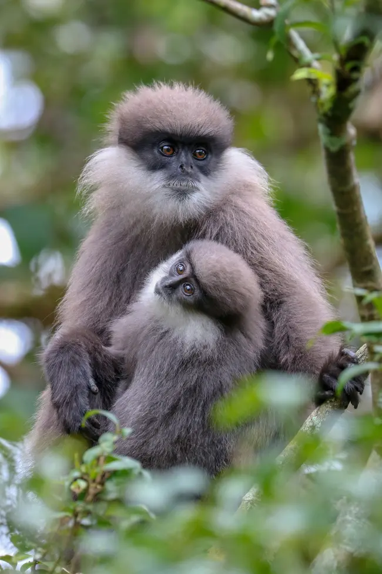
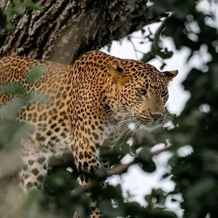
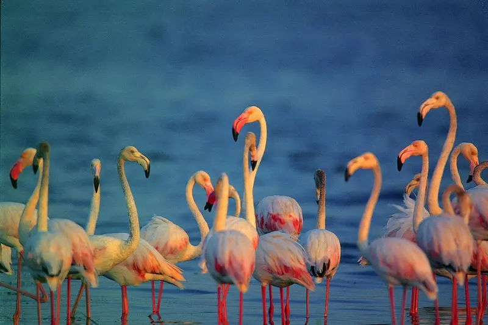
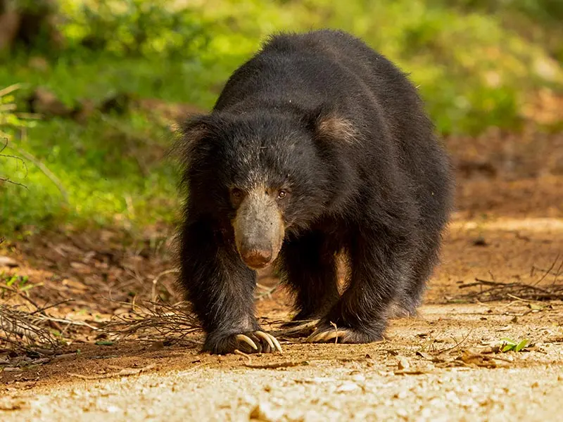

Sri Lanka has everything that a person might want. It is not simply the beauty that is important here. Moreover, the possibilities that nature has placed upon Sri Lanka to be a part of this glorious nature and to feel the sweet compassion of this great fauna are priceless. Visiting here and experiencing these pure senses of wildlife is unquestionably worthwhile.
Join hands with us! Let us explore it together!
EXPLORE
Sri Lanka has everything that a person might want. It is not simply the beauty that is important here. Moreover, the possibilities that nature has placed upon Sri Lanka to be a part of this glorious nature and to feel the sweet compassion of this great fauna are priceless. Visiting here and experiencing these pure senses of wildlife is unquestionably worthwhile.
Join hands with us! Let us explore it together!
EXPLORE
Yala National Park
Location
Yala is a rigorous nature reserve combined with a national park. The park, which is divided into five blocks, protects about 130,000 hectares of terrain that includes light woods, scrubs, grasslands, tanks, and lagoons. Currently, two blocks are available to the public.
It's an exciting adventure that puts you up up and personal with the wild world of nature. Whether you are an avid nature lover or visiting a wildlife park for the first time, if you come with an open mind and a want to explore and learn, you will leave with a fresh perspective on life.
Sinharaja Forest Reserve
Location
Sinharaja, located in south-west Sri Lanka, is the country's last viable region of primary tropical rainforest. More than 60% of the trees are indigenous species, primarily birds, but the reserve also has more than 50% of Sri Lanka's endemic mammals and butterflies, as well as numerous insects, reptiles, and uncommon amphibians.
Bundala National Park
Location
This biologically diverse national park, located along Sri Lanka's southern coastline, was the first Ramsar site to be designated. It is well known for its exotic seasonal bird species. It is made up of marshes, lagoons, and sand dunes and attracts thousands of migrating species from all over the world. This park has a lot to offer not just birdwatchers, but also wildlife and environment fans.
Some Animals you are likely to meet here...
| Image | Name | Food Habits | Features |
|---|---|---|---|
|  | Purple-faced langur |
|
Herbivores, mostly folivores. They feed on various leaves but will also eat fruits and seeds. |
|  | Sri Lankan Leopard |
|
Leopards are carnivores. The diet of these opportunistic feeders includes a huge variety of animals such as jackals, antelopes, gazelles, monkeys, duiker, eland, impala, wildebeest, birds, rodents, hyraxes, hares, snakes, sheep, goats, and insects. |
|  | Greater Flamingo |
|
Greater flamingos consume large amounts of aquatic invertebrates, crustaceans, and algae |
|  | Sri Lankan Sloth Bear |
|
they feed on honey and insects |
|
Source -
https://whc.unesco.org/en/list/405
https://www.dilmahconservation.org/ https://animalia.bio/ |